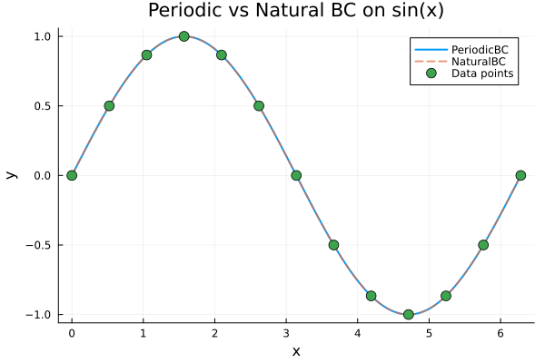
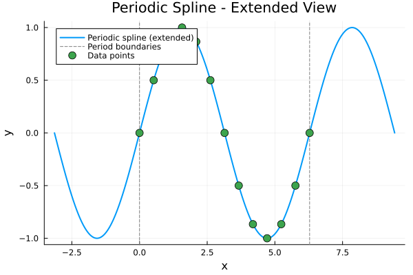
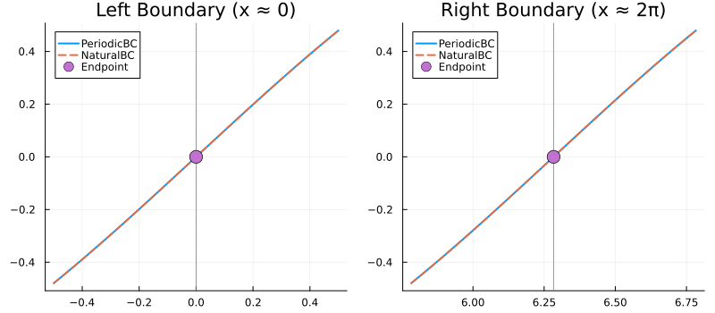
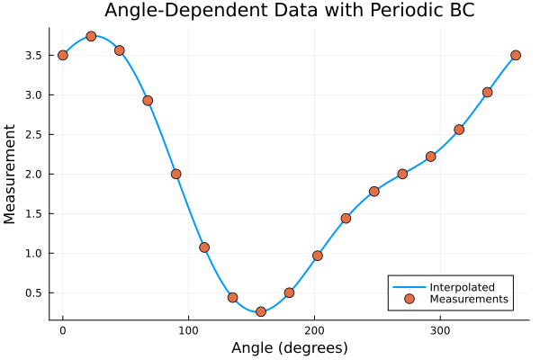
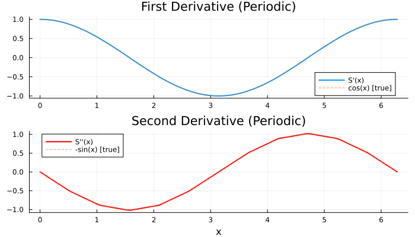

Periodic Boundary Condition
Periodic boundary conditions create cubic splines that wrap smoothly around, connecting the end back to the beginning. This is essential for cyclic data like angles, phases, or time-of-day.
When to Use PeriodicBC
Use PeriodicBC() when your data represents a periodic/cyclic quantity:
- Angles: 0° to 360° (or 0 to 2π)
- Phases: Signal phases, wave phases
- Time cycles: Time-of-day, day-of-week, seasons
- Circular coordinates: Polar angles, longitude
- Any quantity that "wraps around"
Basic Usage
using FastInterpolations
using Plots
# One complete cycle of a sine wave (Range works directly)
x = range(0.0, 2π, 13) # 13 points = 12 intervals
y = sin.(x)
xq = range(0.0, 2π, 200)
# Compare Periodic vs Natural BC
y_periodic = cubic_interp(x, y, xq; bc=PeriodicBC())
y_natural = cubic_interp(x, y, xq; bc=NaturalBC())
plot(xq, y_periodic, label="PeriodicBC", linewidth=2)
plot!(xq, y_natural, label="NaturalBC", linewidth=2, linestyle=:dash, alpha=0.7)
scatter!(x, y, label="Data points", markersize=6)
title!("Periodic vs Natural BC on sin(x)")
xlabel!("x")
ylabel!("y")
The Key Requirement: y[1] ≈ y[end]
For periodic splines to work correctly, your data should satisfy y[1] ≈ y[end]. The function value at the start and end should match (within numerical tolerance).
# Correct: y[1] = y[end] = 0
println("y[1] = ", y[1])
println("y[end] = ", y[end])
println("Difference: ", abs(y[1] - y[end]))y[1] = 0.0
y[end] = -2.4492935982947064e-16
Difference: 2.4492935982947064e-16Mathematical Properties
With PeriodicBC(), the spline satisfies:
| Property | Constraint |
|---|---|
| Value continuity | $S(x_0) = S(x_n)$ |
| First derivative | $S'(x_0) = S'(x_n)$ |
| Second derivative | $S''(x_0) = S''(x_n)$ |
This ensures the curve is C² continuous even at the wrap-around point.
Smooth Wrap-Around Visualization
# Extended visualization to show wrap-around
x_extended = range(-π, 3π, 400)
# Evaluate with wrap extrapolation to see periodicity
y_wrap = cubic_interp(x, y, x_extended; bc=PeriodicBC(), extrap=:extension)
plot(x_extended, y_wrap, label="Periodic spline (extended)", linewidth=2)
vline!([0, 2π], linestyle=:dash, color=:gray, label="Period boundaries")
scatter!(x, y, label="Data points", markersize=6)
title!("Periodic Spline - Extended View")
xlabel!("x")
ylabel!("y")
Comparison: Periodic vs Natural at Endpoints
The key difference is visible at the endpoints:
# Zoom in on the endpoint region
x_zoom = range(-0.5, 0.5, 100)
x_zoom2 = range(2π - 0.5, 2π + 0.5, 100)
p = plot(layout=(1,2), size=(800, 350))
# Left boundary
plot!(p[1], x_zoom, cubic_interp(x, y, x_zoom; bc=PeriodicBC(), extrap=:extension),
label="PeriodicBC", linewidth=2)
plot!(p[1], x_zoom, cubic_interp(x, y, x_zoom; bc=NaturalBC(), extrap=:extension),
label="NaturalBC", linewidth=2, linestyle=:dash)
vline!(p[1], [0], color=:gray, linestyle=:dot, label=nothing)
scatter!(p[1], [x[1]], [y[1]], markersize=8, label="Endpoint")
title!(p[1], "Left Boundary (x ≈ 0)")
# Right boundary
plot!(p[2], x_zoom2, cubic_interp(x, y, x_zoom2; bc=PeriodicBC(), extrap=:extension),
label="PeriodicBC", linewidth=2)
plot!(p[2], x_zoom2, cubic_interp(x, y, x_zoom2; bc=NaturalBC(), extrap=:extension),
label="NaturalBC", linewidth=2, linestyle=:dash)
vline!(p[2], [2π], color=:gray, linestyle=:dot, label=nothing)
scatter!(p[2], [x[end]], [y[end]], markersize=8, label="Endpoint")
title!(p[2], "Right Boundary (x ≈ 2π)")
p
Notice how PeriodicBC maintains smooth curvature across the boundary while NaturalBC has zero curvature at endpoints.
Real-World Example: Angle Data
# Simulated angle-dependent measurement (e.g., wind direction, antenna pattern)
# Using Vector here to demonstrate non-uniform grid support
angles = collect(range(0.0, 2π, 17)) # Vector for mutability
measurements = 2.0 .+ 1.5 .* cos.(angles) .+ 0.5 .* sin.(2 .* angles)
# Ensure periodic: first and last should match
measurements[end] = measurements[1]
angles_fine = range(0.0, 2π, 360)
interp_periodic = cubic_interp(angles, measurements, angles_fine; bc=PeriodicBC())
plot(rad2deg.(angles_fine), interp_periodic, label="Interpolated", linewidth=2)
scatter!(rad2deg.(angles), measurements, label="Measurements", markersize=6)
xlabel!("Angle (degrees)")
ylabel!("Measurement")
title!("Angle-Dependent Data with Periodic BC")
Using with Interpolant
# Create a periodic interpolant
itp = cubic_interp(x, y; bc=PeriodicBC())
# Evaluate at various points
test_points = [0.0, π/4, π/2, π, 3π/2, 2π]
for pt in test_points
println("itp($(round(pt, digits=2))) = $(round(itp(pt), digits=4))")
enditp(0.0) = 0.0
itp(0.79) = 0.707
itp(1.57) = 1.0
itp(3.14) = 0.0
itp(4.71) = -1.0
itp(6.28) = 0.0Derivatives with Periodic BC
Derivatives are also periodic:
itp = cubic_interp(x, y; bc=PeriodicBC())
itp_d1 = deriv1(itp)
itp_d2 = deriv2(itp)
xq_deriv = range(0.0, 2π, 100)
d1_vals = [itp_d1(xi) for xi in xq_deriv]
d2_vals = [itp_d2(xi) for xi in xq_deriv]
p = plot(layout=(2,1), size=(700, 400))
plot!(p[1], xq_deriv, d1_vals, label="S'(x)", linewidth=2)
plot!(p[1], xq_deriv, cos.(xq_deriv), label="cos(x) [true]", linestyle=:dash, alpha=0.7)
title!(p[1], "First Derivative (Periodic)")
plot!(p[2], xq_deriv, d2_vals, label="S''(x)", linewidth=2, color=:red)
plot!(p[2], xq_deriv, -sin.(xq_deriv), label="-sin(x) [true]", linestyle=:dash, alpha=0.7)
title!(p[2], "Second Derivative (Periodic)")
xlabel!(p[2], "x")
p
Common Pitfalls
1. y[1] ≠ y[end]
If your data doesn't satisfy the periodicity condition, the spline will still be computed but may have discontinuities:
# Bad: Non-matching endpoints
x_bad = [0.0, 1.0, 2.0, 3.0]
y_bad = [0.0, 1.0, 0.5, 2.0] # y[1]=0, y[end]=2 ≠ 0
# This will work but the spline won't be truly periodic2. Forgetting the Domain Wraps
When using extrap=:wrap, query points outside [x[1], x[end]) are wrapped:
# Query at x = 2.5π (outside [0, 2π])
# With :wrap, this becomes x = 0.5π
result = cubic_interp(x, y, [2.5π]; bc=PeriodicBC(), extrap=:wrap)
println("cubic_interp at 2.5π with :wrap = ", round(result[1], digits=4))
println("This equals value at 0.5π = ", round(sin(0.5π), digits=4))cubic_interp at 2.5π with :wrap = 1.0
This equals value at 0.5π = 1.0See Also
- Standard BC: For non-periodic data
- Extrapolation: Using
:wrapextrapolation with periodic data - Cubic API Reference: Complete function signatures